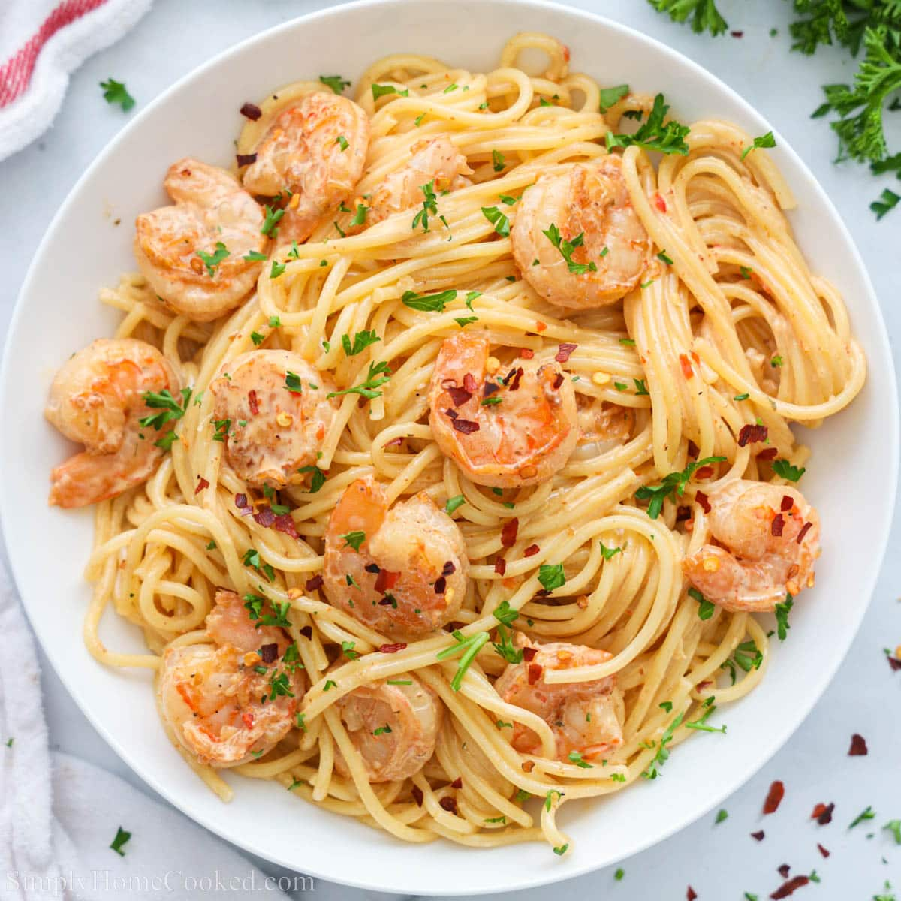

Ingredients
- 8 oz spaghetti (half a standard box)
- 1 lb shrimp (peeled & deveined)
- 3–4 cloves garlic, minced
- 2 tbsp olive oil
- 3 tbsp butter
- 1/4 tsp red pepper flakes (optional)
- 1/2 cup white wine or chicken broth
- Juice of 1/2 lemon
- Salt & pepper
- Fresh parsley, chopped
Preparation
- Bring a pot of salted water to a boil.
- Add spaghetti and cook until al dente.
- Save 1/2 cup pasta water, then drain and set aside.
Cooking the Shrimp
- Pat shrimp dry and season with salt & pepper.
- In a large pan, heat 2 tbsp olive oil over medium-high.
- Add shrimp and cook 1–2 minutes per side until pink.
- Remove shrimp from the pan (don’t wash the pan—keep the flavor!).
Making the Scampi Sauce
- Lower heat to medium.
- Add 3 tbsp butter to the pan.
- Add minced garlic and optional red pepper flakes.
- Cook 30 seconds (don’t brown the garlic).
- Pour in white wine or chicken broth.
- Simmer 2–3 minutes until slightly reduced.
- Add the lemon juice.
Bring It Together
- Add shrimp back into the sauce.
- Add cooked spaghetti.
- Toss everything together.
- Add a splash of reserved pasta water if you want it saucier.
- Taste and adjust salt, pepper, or lemon.